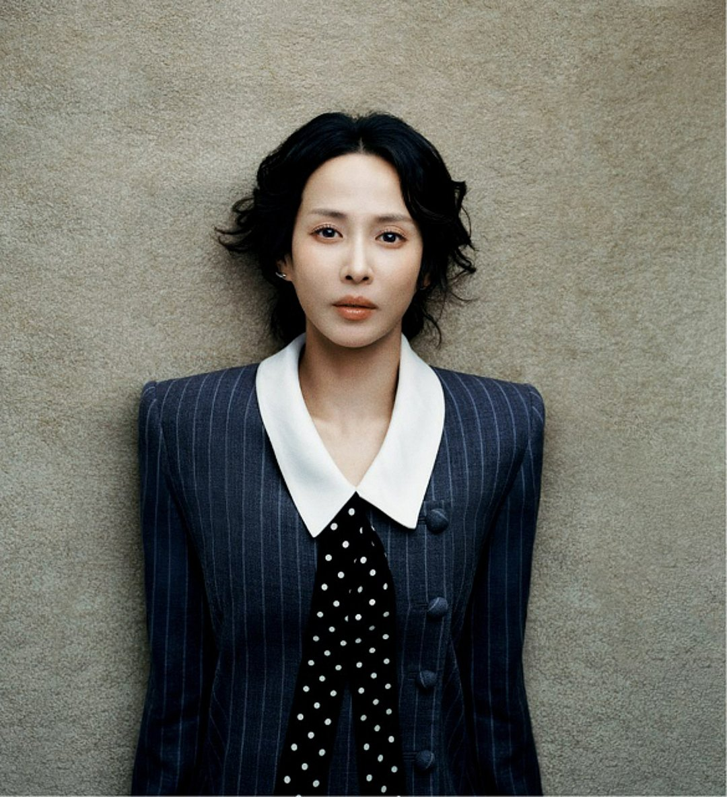
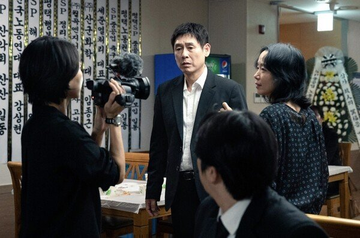
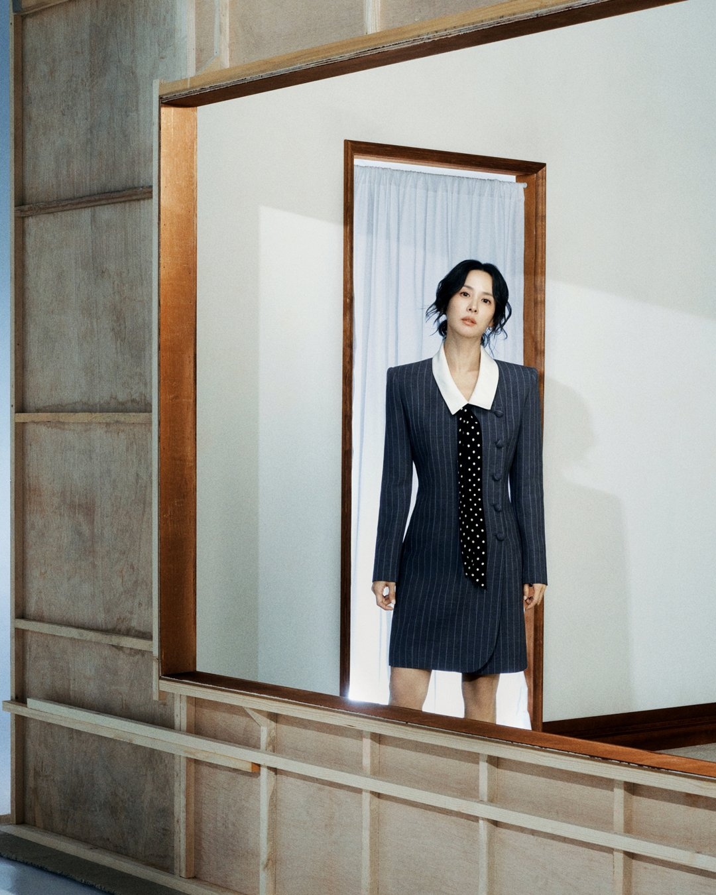
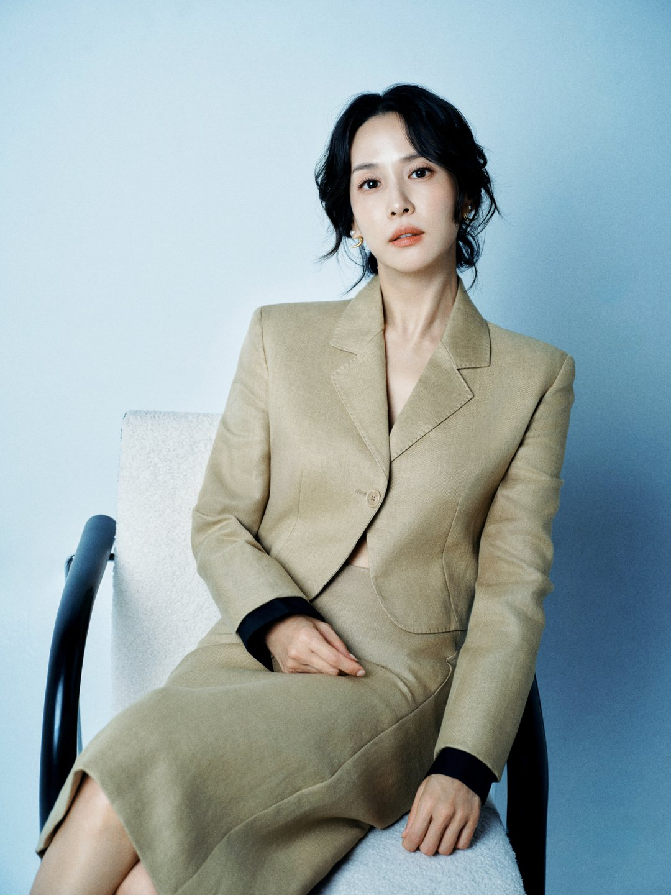
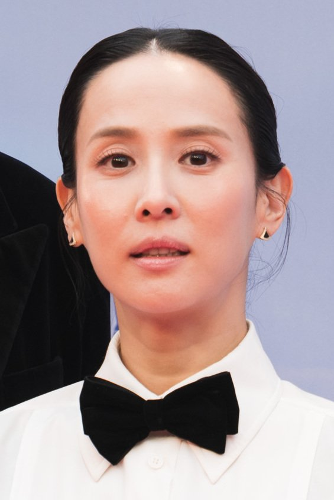

집은 압구정, 아버지는 세탁소 사장. 조여정이 '가능한 사랑'의 예지를 설명하며 꺼낸 설정이에요. 넷플릭스 공개 뒤 이어진 인터뷰에서 조여정은 예지를 '어디에도 속하지 못한 사람'이라고 불렀어요. 그 말을 따라가면 영화 속 예지가 왜 그렇게 애쓰는지 실마리가 보여요.
📷 사진 1 자리
▲ '가능한 사랑'에서 예지를 연기한 조여정 · 사진=넷플릭스 제공
압구정 집, 세탁소 아버지
'가능한 사랑'은 해고 노동자 부부와 다큐멘터리 감독 부부가 다큐 제작을 계기로 만나는 이야기예요. 조여정은 다큐멘터리 감독 예지를, 조인성은 그 남편 상우를 맡았어요.
📷 사진 2 자리
▲ '가능한 사랑' 속 다큐멘터리 촬영 장면 · 사진=넷플릭스 제공
조여정이 그린 예지는 이래요. 부자 동네에서 자랐지만 집안은 세탁소를 했고, 부유한 상우와 결혼했어도 그쪽 세계에 온전히 속하지는 못한 사람. 그래서 어떤 관계에서든 늘 노력하는 쪽이 됐다는 해석이에요.
이창동 감독은 예지에게 자기 정체성을 담았다고 말했대요. 다만 왜 조여정이었는지는 따로 설명하지 않았다고 해요.
▶ 영상 1 자리
사흘을 미룬 대답
캐스팅 연락은 집에서 쉬던 날 갑자기 왔어요. 조여정은 그 순간을 '영화 같은 일'이라고 표현했죠. 다음 날 바로 감독을 만나 시나리오를 받았어요.
📷 사진 3 자리
▲ '가능한 사랑' 인터뷰 공식 사진 속 조여정 · 사진=넷플릭스 제공
정작 답은 바로 하지 못했어요. 이야기의 여운이 너무 진해서 사흘쯤 지나서야 "캐릭터가 어렵지만 당연히 하고 싶다"고 전했대요. 전도연, 설경구, 조인성 모두 이번이 첫 호흡이었고, 그중 전도연에게는 예전에 먼저 밥을 사 달라고 연락했을 만큼 팬이었다고 털어놨어요.
봉준호·이창동·황동혁의 같은 대답
'기생충'의 봉준호, '가능한 사랑'의 이창동, 그리고 신작을 준비 중인 황동혁 감독까지. 왜 자기를 고르냐는 질문에 조여정은 "저도 궁금하다"고 웃었어요.
실제로 물어본 적도 있대요. 봉준호 감독은 예전 작품 속 연기를 예로 들어 설명해 줬고, 이창동 감독은 말이 없어 인터뷰 기사를 찾아봤다고 해요. 황동혁 감독의 답은 "연기 잘하시니까요" 한마디였어요. 결국 세 사람의 대답은 비슷했다는 거죠.
📷 사진 4 자리
▲ 조여정 '가능한 사랑' 인터뷰 공식 사진 · 사진=넷플릭스 제공
'기생충' 이후의 두려움, 두 번째 오스카 레이스
불과 며칠 전 유튜브 '피디씨'에 나와서는 '기생충' 이후 과대평가될까, 좋은 영화가 더는 안 들어올까 두려웠다고 했어요. 또래 배우들 사이에서 초조했던 시간도 숨기지 않았고요.
그 뒤에 온 작품이 '가능한 사랑'이에요. 베니스국제영화제 심사위원대상을 받았고, 아카데미 국제장편영화 부문 한국 출품작이 됐어요. '기생충' 때는 드라마 촬영 중이라 오스카 레이스를 기사로만 봤기 때문에, 처음부터 함께하는 건 이번이 처음이에요. '기생충'으로 아카데미 회원이 됐지만 회비를 못 내 투표 자격이 남아 있을지 모르겠다는 고백도 웃으며 꺼냈어요.
📷 사진 5 자리
▲ 사진: Marlene Landu / CC BY-SA 4.0 / 위키미디어 공용
인터뷰를 모아 보니 조여정이 예지를 설명할 때 쓴 '노력'이라는 단어가 계속 걸렸어요. 감독들이 왜 자기를 고르는지 모르겠다는 말과 나란히 놓으면, 그 답의 일부가 예지 해석 안에 이미 들어 있는 것처럼 보여요. 영화를 볼 생각이라면 예지를 '불편한 인물'보다 '어디에도 속하지 못해 애쓰는 사람'으로 놓고 따라가 보길 권해요.
조여정에게 예지는 어디에도 속하지 못해 늘 노력하는 사람이에요. '가능한 사랑'은 11월 6일부터 넷플릭스에서 볼 수 있어요.




